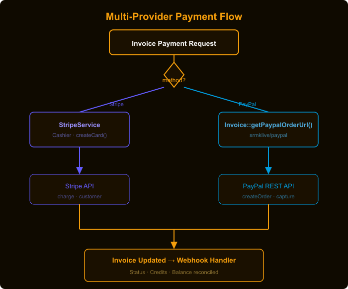

Insights<!-- POST CONTENT START --> markerssearcheye-logo.png → replace src="searcheye-logo.png" with WordPress URLsearcheye-stripe-paypal-multi-tenant-payments-flow-diagram.png → replace src="searcheye-stripe-paypal-multi-tenant-payments-flow-diagram.png" with WordPress URLsearcheye-stripe-paypal-multi-tenant-payments-thumbnail.png → set as Featured Image| Title | Stripe + PayPal: Supporting Two Payment Providers in One Laravel App |
| Slug | searcheye-stripe-paypal-multi-tenant-payments |
| Focus Keyword | Stripe PayPal Laravel dual payment |
| Meta Description | How SearchEye supports both Stripe and PayPal on the same invoice in Laravel — using a PaymentProcessorInterface, Laravel Cashier, and srmklive/paypal for multi-tenant agency billing. |
| Excerpt | We wired Stripe and PayPal side-by-side on the same invoice using a shared interface — agencies choose their provider, we handle the rest. |
| Category | Insights |
| Tags | Stripe, PayPal, Laravel, Laravel Cashier, PHP, Payments, SaaS, Multi-tenant |
| File | Size | Alt Text |
|---|---|---|
searcheye-logo.png | auto × 48px | SearchEye logo |
searcheye-stripe-paypal-multi-tenant-payments-thumbnail.png | 1200 × 628 px | Stripe PayPal dual payment Laravel cover image |
searcheye-stripe-paypal-multi-tenant-payments-flow-diagram.png | ~700 px wide | Stripe and PayPal dual payment provider flow diagram |
PaymentProcessorInterface defines a common contract (getCustomer, createCard, getCards, etc.). StripeService implements it using Laravel Cashier. PayPal uses srmklive/paypal (PayPalClient) invoked directly on the Invoice model's getPaypalOrderUrl() method. The StripeServiceProvider binds the interface to StripeService via Laravel's service container. Invoices store paypal_order_id and paypal_approve_url columns. Stripe customer IDs are stored on the Agency model via Cashier.How SearchEye uses a shared PaymentProcessorInterface, Laravel Cashier, and srmklive/paypal to let agencies pay via Stripe or PayPal on the same invoice — without duplicating billing logic.
SearchEye's agencies come from diverse markets. Some want to pay by saved card via Stripe; others — particularly in regions where PayPal is dominant — want to use their PayPal account. We needed both options to work for the same invoice, without building two separate billing systems or letting payment logic scatter across controllers.
Requirements:
We defined a PaymentProcessorInterface that describes all the billing operations we need. StripeService implements this interface using Laravel Cashier. PayPal, which has a different flow (redirect-based approval), is invoked directly on the Invoice model using the srmklive/paypal package.

The interface defines every card and customer operation we perform, keeping controllers decoupled from the specific payment SDK.
// app/Contracts/PaymentProcessorInterface.php
interface PaymentProcessorInterface
{
public function setAgency(Agency $agency);
public function getCustomer();
public function createCard($source);
public function getCards();
public function updateCard($card_id, $parameters);
public function removeCard($card_id);
public function setDefaultCard($card_id);
public function setCustomerName($new_name);
public function setCustomerEmail($email);
public function reCreateStripeCustomer();
public function adjustmentToStripeCredits($amount);
}The StripeServiceProvider binds the interface to StripeService. Any controller that type-hints PaymentProcessorInterface automatically gets the Stripe implementation — swapping providers later requires only a one-line change here.
// app/Providers/StripeServiceProvider.php
class StripeServiceProvider extends ServiceProvider
{
public function register()
{
$this->app->bind(
\App\Contracts\PaymentProcessorInterface::class,
\App\Services\StripeService::class
);
}
}StripeService wraps Laravel Cashier's billable methods and adds SearchEye-specific logic: it fetches or creates Stripe customers lazily, stores the stripe_id on the Agency model, and formats card responses consistently.
// app/Services/StripeService.php
class StripeService implements PaymentProcessorInterface
{
public function __construct()
{
$mode = config('services.stripe.mode');
$this->stripe = new StripeClient(config('services.stripe.' . $mode . '.secret_key'));
Stripe::setApiKey(config('services.stripe.' . $mode . '.secret_key'));
}
public function getCustomer()
{
$billable = $this->getBillable(); // returns Agency or Client
if (!empty($billable->stripe_id)) {
$customer = $billable->createOrGetStripeCustomer();
if (isset($customer->id) && !isset($customer->deleted)) {
return $this->formatCustomerInfo($customer);
}
}
$customer = $billable->createAsStripeCustomer(['name' => $billable->company_name]);
$billable->stripe_id = $customer->id;
$billable->save();
return $this->formatCustomerInfo($customer);
}
}PayPal uses a redirect flow rather than a card form. The Invoice model stores paypal_order_id and paypal_approve_url so that if the browser session is interrupted, the existing order is reused rather than creating a duplicate charge.
// app/Models/Invoice.php
use Srmklive\PayPal\Services\PayPal as PayPalClient;
public function getPaypalOrderUrl(bool $create = false): ?string
{
$provider = new PayPalClient;
$provider->getAccessToken();
$amount_to_be_paid = floatval($this->getFinalPaymentDetails()['to_be_paid'] / 100);
if ($this->paypal_order_id) {
$order = $provider->showOrderDetails($this->paypal_order_id);
if (!isset($order['id'])) {
$this->paypal_order_id = null;
$this->paypal_approve_url = null;
$this->save();
}
}
if (!$this->paypal_order_id) {
$order = $provider->createOrder([
'intent' => 'CAPTURE',
'purchase_units' => [[
'amount' => ['currency_code' => 'USD', 'value' => $amount_to_be_paid],
]],
'application_context' => [
'shipping_preference' => 'NO_SHIPPING',
'user_action' => 'PAY_NOW',
'return_url' => config('paypal.base_url') . '/paypal/order-capture/invoice/' . $this->id,
'cancel_url' => config('paypal.base_url') . '/agents/link-order-review',
],
]);
$this->paypal_order_id = $order['id'];
}
foreach ($order['links'] as $link) {
if ($link['rel'] === 'approve') {
$this->paypal_approve_url = $link['href'];
break;
}
}
$this->save();
return $this->paypal_approve_url;
}Need multi-provider billing in your SaaS product?
Talk to us about your project →